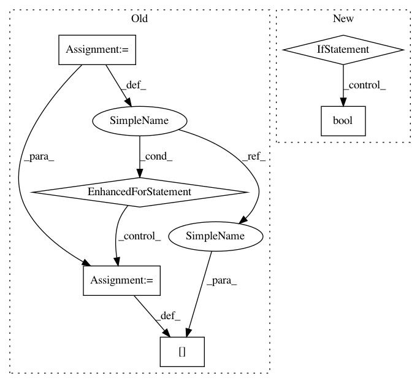

fde4b1f40f02082b56e8af3c696b3f1b0cef7fa4,src/chaospy/saltelli.py,Saltelli,__getitem__,#Saltelli#Any#,17
Before Change
return getattr(self, key)
new = np.empty(self.samples1.shape)
for i in range(len(indices)):
if indices[i]:
new[i] = self.samples1[i]
else:
new[i] = self.samples2[i]
if self.poly:
new = self.poly(*new)
setattr(self, key, new)
After Change
assert len(self.dist) == len(indices)
// uniquify:
key = tuple(bool(idx) for idx in indices)
if key in self.buffer:
matrix = self.buffer[key]
In pattern: SUPERPATTERN
Frequency: 3
Non-data size: 6
Instances
Project Name: jonathf/chaospy
Commit Name: fde4b1f40f02082b56e8af3c696b3f1b0cef7fa4
Time: 2017-09-30
Author: jonathf@gmail.com
File Name: src/chaospy/saltelli.py
Class Name: Saltelli
Method Name: __getitem__
Project Name: jonathf/chaospy
Commit Name: fde4b1f40f02082b56e8af3c696b3f1b0cef7fa4
Time: 2017-09-30
Author: jonathf@gmail.com
File Name: src/chaospy/saltelli.py
Class Name: Saltelli
Method Name: __getitem__
Project Name: scikit-learn-contrib/categorical-encoding
Commit Name: 3526a6d7d5005d0cb126a39c894ad7f46b441260
Time: 2018-11-17
Author: jcastaldo08@gmail.com
File Name: category_encoders/binary.py
Class Name: BinaryEncoder
Method Name: fit
Project Name: scikit-learn-contrib/categorical-encoding
Commit Name: 3526a6d7d5005d0cb126a39c894ad7f46b441260
Time: 2018-11-17
Author: jcastaldo08@gmail.com
File Name: category_encoders/basen.py
Class Name: BaseNEncoder
Method Name: fit